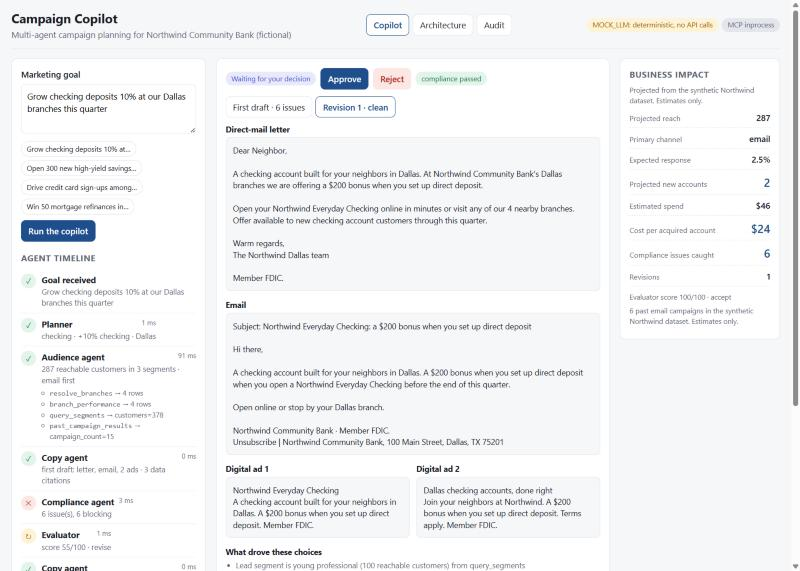

01 Multi-agent workflow · bank marketing
Campaign Copilot
- The problem
- A bank marketer wants a campaign that is backed by data and clears compliance. Today that is a week of handoffs between marketing, analytics and compliance, and afterwards nobody can show why a claim was allowed.
- What I built
- Five LangGraph agents. The planner breaks the goal down. The audience agent queries a synthetic bank dataset only through an MCP server. The copy agent drafts a letter, an email and two ads and cites the data behind each choice. The compliance agent runs a deterministic rulebook with retrieval over policy text and cites the paragraph for every flag. The evaluator scores and loops back at most twice. Then the graph stops for a human to approve. Every step lands in a hash-chained audit log.
- Stack
- Python 3.11LangGraphMCP SDK 2Claude structured outputsFastAPI · SSEReact · TypeScriptpytest · evals · CI
Northwind Community Bank is fictional and the data is synthetic. The demo replays a recorded run; clone the repo to run the live agents, no API key needed.
